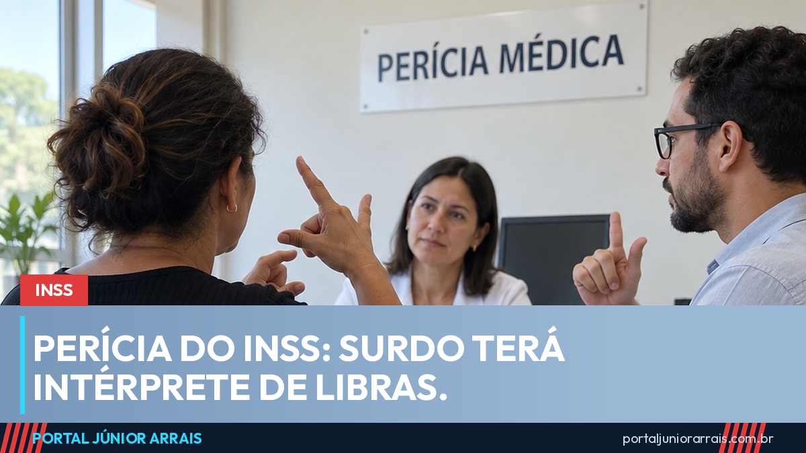

Perícia do INSS terá intérprete de Libras para quem é surdo, diz nova portaria

Quem é surdo e usa a Língua Brasileira de Sinais passa a ter direito a um intérprete de Libras durante a perícia médica do INSS. A regra está na Portaria MPS nº 1.357, do Ministério da Previdência Social, publicada na quarta-feira, 23 de setembro, e já vale para os atendimentos da Perícia Médica Federal em todo o país.
A mudança mexe num ponto sensível. A perícia é o momento em que o segurado explica ao médico o que sente, desde quando e o que deixou de conseguir fazer. Para quem se comunica em Libras, conversar por bilhete, leitura labial ou por meio de um parente sem preparo sempre foi uma barreira, e informação mal compreendida nessa hora pode pesar no resultado.
O que a portaria determina
- Intérprete no próprio ato pericial — não só na recepção da agência, mas dentro da sala, enquanto o perito faz as perguntas e o exame;
- Presencial ou a distância — a interpretação pode ser feita por videoconferência, inclusive quando o segurado e o perito estão juntos na agência;
- Identificação e clareza — no formato remoto, é preciso garantir que todos os participantes sejam identificados e que a comunicação seja compreensível;
- Parente pode interpretar — a norma não impede que o intérprete seja da família da pessoa com deficiência;
- Autonomia do perito mantida — o intérprete faz a ponte da conversa, mas não interfere na avaliação médica;
- Recusa tem consequência — negar a participação do intérprete sem justificativa pode levar à apuração de responsabilidade administrativa.
Por que isso importa
A perícia decide o destino de benefícios como o auxílio por incapacidade temporária, a aposentadoria por incapacidade e parte da avaliação do BPC da pessoa com deficiência. Uma resposta mal traduzida sobre dor, limitação ou rotina de trabalho pode virar um laudo que não retrata a realidade.
No portal, já mostramos que a pessoa com deficiência enfrenta desvantagens em série — só 3 em cada 10 têm trabalho, segundo o Censo. A comunicação na perícia é mais uma dessas barreiras, agora enfrentada por norma expressa.
O que ainda não está claro
A divulgação oficial não detalhou como o intérprete será disponibilizado em cada agência, nem se haverá rede própria contratada pelo INSS ou uso de centrais de videointerpretação. Também não há, por enquanto, dados sobre quantas perícias por ano envolvem segurados surdos. Esses pontos devem ser regulamentados na prática do atendimento, e o portal acompanha.
Cuidado com golpe
Novidade em perícia costuma virar isca. Desconfie de quem oferece "vaga de perícia com intérprete" em data mais próxima mediante pagamento, pede Pix para "adiantar o agendamento" ou solicita senha e foto de documento pelo celular. Nenhum órgão do governo cobra taxa nem pede Pix, senha ou dados do cartão para marcar ou realizar perícia.
Se a perícia já aconteceu sem intérprete e o benefício foi negado, ou se você tem dúvida sobre como a sua limitação foi registrada no laudo, procure um profissional de sua confiança para analisar o caso — há prazos para contestar a decisão.
Conteúdo informativo — não substitui orientação individualizada sobre o seu caso.
Júnior Arrais · Editor do Portal Júnior Arrais
Comunicador de Ubá (MG). Escreve todos os dias sobre benefícios sociais, INSS, trabalho e economia do dia a dia, a partir do Diário Oficial, de portarias e de fontes oficiais, em linguagem simples. Conheça a linha editorial e a política de correções do portal.